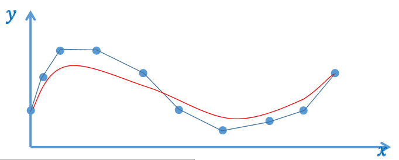

多项式的优点与缺点
这种类似于\(\sum a_if_i(x)\)的形式都叫多项式，根据\(f_i(x)\)的不同的定义，会成为不同的多项。例如以幂函数为基的是幂基多项式，比Berstein为基的是Bertein多项式。
优点
- 易于计算, 表现良好, 光滑, ...
- 表达能力足够!
魏尔斯特拉斯Weierstrass定理:令\(f\)为闭区间\([a, b]\)上任意连续函数, 则对任意给\(\varepsilon\), 存在\(n\)和多项式\(P_n\)使得
$$ \left|f(x)-P_{n}(x)\right|<\varepsilon, \forall x \in[a, b] $$
翻译成人话是：\(Pn(x)\)可以在一定误差内拟合任意\(f(x)\)。只要n足够大。
这里\(x的范围区间是[a,b]，通常考虑[0,1]\)
Weierstrass只证明了存在性,未给出多项式
Bernstein多项式
完备性
伯恩斯坦Bernstein给出了Bernstein的完备性证明：
对\([0,1]\)区间上任意连续函数\(f(x)\)和任意正整数\(n\), 以下不等式对所有\(x\in[0,1]\)成立
$$ |f(x)-B_n(f,x)|<\frac{9}{4} m_{f,n} $$
\(m_{f,n}\)=lower upper bound of |\(f(y_1)-f(y_2)\)|
\(y_1, y_2\in[0,1] \) 且|\(y_1-y_2\)|<\(\frac{1}{\sqrt{n}} \)
$$ B_n(f, x)=\sum_{j=0}^{n} f(x_j) b_{n, j}(x) $$
其中\(x_j\) 为[\(0,1\)]上等距采样点，\(b_{n,j}\)为Bernstein基
$$ b_{n,j} = \binom{n}{j} x^j (1-x)^{n-j} $$
\(\binom{n}{j}相当于{\textstyle C_{n}^{j}} \),排列组合的意思。
Bernstein基

- \(b_{0,0}(x)=1\)
- \(b_{0,1}(x)=1-x, b_{1,1}=x\)
- \(b_{0,2}(x)=(1-x)^2, b_{1,2}=2x(1-x),b_{2,2}=x^2\)
- \(b_{0,3}(x)=(1-x)^3,b_{1,3}=3x(1-x)^2, b_{2,3}=3x^2(1-x),b_{3,3}=x^3\)
- \(b_{0,4}(x)=(1-x)^4,b_{1,4}=4x(1-x)^3,b_{2,4}=6x^2(1-x)^2, b_{3,4}=4x^3(1-x),b_{4,4}=x^4\)
🔎 [36：40]
✅ 矩阵的本质：在不同的基函数空间做变换
6张图分别是0-5次的 Bernstein 基。
Bernstein多项式的优点
Bernstein基函数的良好性质：
- 非常好的几何意义！
- 正性、权性（和为1）\(\Rightarrow \)凸包性
权性。上面图中，任意画一条竖线，线上点的\(y\)值和为1
[?] 什么是凸包性？为什么有权性就有凸包性？
为什么凸包性就计算稳定？
- 变差缩减性
- 递归线性求解方法
- 细分性
- …
🔎 丰富的理论：CAGD 课程
关于Bernstein函数的两种观点
🔎 [46：17]

$$ B_{n}(f, x)=\sum_{j=0}^{n} f\left(\frac{i}{n}\right) b_{n, j}(x) $$
\(f(x)\)是一个离散函数， \(f(\frac{i }{n} )\)为\(x\)为第i个采样点时\(f(x)\)的值，因此 \(f(\frac{i}{n} )\)代表能有采样点。
红色实际上是基于蓝点画的 Bezier 曲线。
代数观点
蓝色为采样点\(f(\frac{i}{n} )\)，\(b_{n,j}(x) \)是系数，用系组来组合采样点。 红色为拟合曲线\(B_n (f,x)\)。当采样点足够多时\(n\to \infty\)，得到\(f(x)逼近 B_n (f,x)\) 红线逼近蓝点。
几何观点
\(f(\frac{i}{n})\)是系数，\(bn_1,j(x)\)是基函数，用系数来组合基函数，得到新的函数。